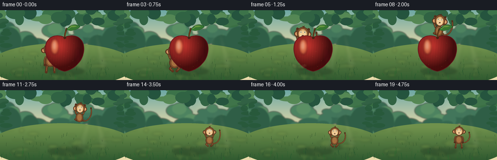
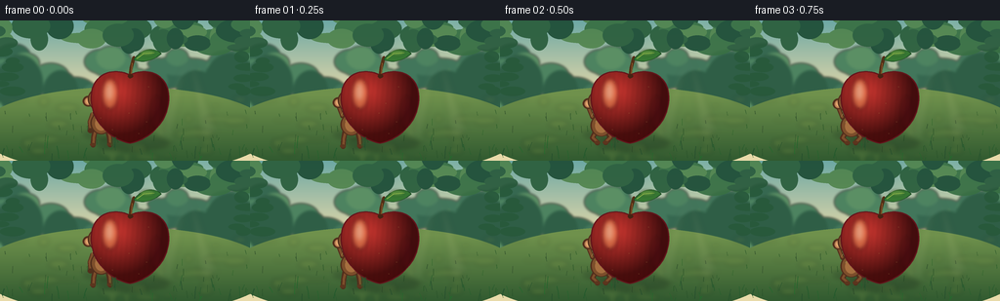
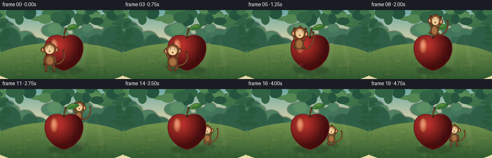
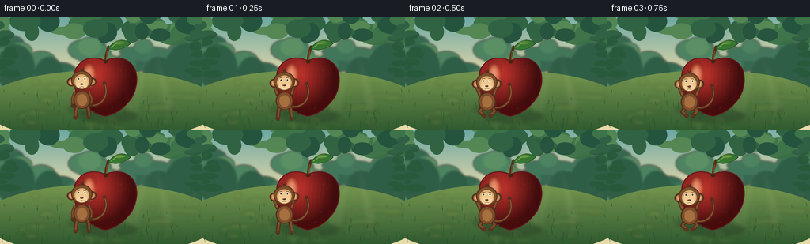
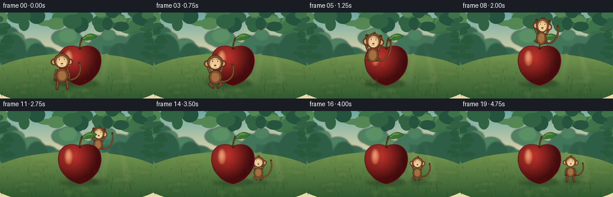
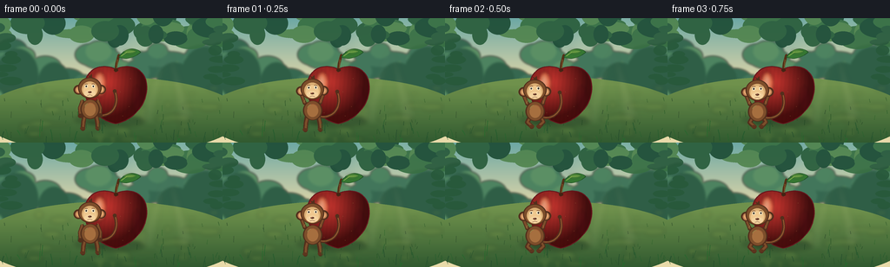

CODING AGENTS AS PIXEL WORLD MODELS
traex/DeepSeek-V4.1-Flash · dynamic_spatial_relationship_0062
点击播放 · 原生 RGB 像素
逐轮保存的候选
回放视频、检查图与代码变化。
每份候选均可单独播放。实际图片检查记录在下方工具轨迹中。
候选 01播放与检查图
点击播放 · 原生 RGB 像素


展开代码变化
--- 上一保存版本
+++ 本次保存版本
@@ -0,0 +1,544 @@
+from __future__ import annotations
+
+import math
+from pathlib import Path
+
+import numpy as np
+from PIL import Image, ImageDraw, ImageFilter
+
+import artifact_io
+
+
+W, H = 256, 144
+SS = 4
+SW, SH = W * SS, H * SS
+CASE_DIR = Path(__file__).resolve().parent
+
+
+def s(value: float) -> int:
+ return int(round(value * SS))
+
+
+def pt(x: float, y: float) -> tuple[int, int]:
+ return s(x), s(y)
+
+
+def box(x0: float, y0: float, x1: float, y1: float) -> tuple[int, int, int, int]:
+ return s(x0), s(y0), s(x1), s(y1)
+
+
+def mix(a: tuple[float, float, float], b: tuple[float, float, float], t: float) -> tuple[int, int, int]:
+ t = max(0.0, min(1.0, t))
+ return tuple(int(round(a[i] * (1.0 - t) + b[i] * t)) for i in range(3))
+
+
+def smoothstep(t: float) -> float:
+ t = max(0.0, min(1.0, t))
+ return t * t * (3.0 - 2.0 * t)
+
+
+def bezier(
+ p0: tuple[float, float],
+ p1: tuple[float, float],
+ p2: tuple[float, float],
+ p3: tuple[float, float],
+ count: int = 24,
+) -> list[tuple[float, float]]:
+ points = []
+ for i in range(count):
+ t = i / (count - 1)
+ u = 1.0 - t
+ x = u**3 * p0[0] + 3 * u * u * t * p1[0] + 3 * u * t * t * p2[0] + t**3 * p3[0]
+ y = u**3 * p0[1] + 3 * u * u * t * p1[1] + 3 * u * t * t * p2[1] + t**3 * p3[1]
+ points.append((x, y))
+ return points
+
+
+def polygon(draw: ImageDraw.ImageDraw, points: list[tuple[float, float]], fill, outline=None, width=1):
+ scaled = [pt(x, y) for x, y in points]
+ draw.polygon(scaled, fill=fill)
+ if outline is not None:
+ draw.line(scaled + [scaled[0]], fill=outline, width=s(width), joint="curve")
+
+
+def ellipse(draw: ImageDraw.ImageDraw, bounds, fill, outline=None, width=1):
+ draw.ellipse(box(*bounds), fill=fill, outline=outline, width=s(width) if outline else 0)
+
+
+def line(draw: ImageDraw.ImageDraw, points, fill, width: float):
+ scaled = [pt(x, y) for x, y in points]
+ draw.line(scaled, fill=fill, width=s(width), joint="curve")
+ radius = width / 2.0
+ for x, y in (points[0], points[-1]):
+ draw.ellipse(box(x - radius, y - radius, x + radius, y + radius), fill=fill)
+
+
+def gradient_image(
+ top: tuple[int, int, int],
+ bottom: tuple[int, int, int],
+ y0: float = 0.0,
+ y1: float = H,
+) -> Image.Image:
+ y = np.linspace(0.0, 1.0, SH, dtype=np.float32)
+ span = max(1e-6, y1 - y0)
+ t = np.clip((y * H - y0) / span, 0.0, 1.0)[:, None]
+ colors = np.array(top, dtype=np.float32)[None, :] * (1.0 - t) + np.array(bottom, dtype=np.float32)[None, :] * t
+ arr = np.repeat(colors[:, None, :], SW, axis=1).astype(np.uint8)
+ return Image.fromarray(arr, "RGB")
+
+
+def make_background() -> Image.Image:
+ rng = np.random.default_rng(27)
+ sky = gradient_image((109, 168, 164), (232, 218, 169), 0, 79)
+ image = sky.convert("RGBA")
+
+ glow = Image.new("RGBA", (SW, SH), (0, 0, 0, 0))
+ gd = ImageDraw.Draw(glow)
+ for radius, alpha in ((52, 20), (40, 24), (29, 32), (18, 45)):
+ ellipse(gd, (194 - radius, 31 - radius, 194 + radius, 31 + radius), (255, 240, 181, alpha))
+ glow = glow.filter(ImageFilter.GaussianBlur(s(8)))
+ image = Image.alpha_composite(image, glow)
+
+ distant = Image.new("RGBA", (SW, SH), (0, 0, 0, 0))
+ dd = ImageDraw.Draw(distant)
+ distant_colors = [
+ (66, 118, 91, 255),
+ (77, 131, 96, 255),
+ (91, 143, 100, 255),
+ (54, 104, 80, 255),
+ ]
+ for i in range(54):
+ x = float(rng.uniform(-8, 264))
+ y = float(rng.uniform(36, 82))
+ rx = float(rng.uniform(8, 24))
+ ry = float(rng.uniform(5, 15))
+ ellipse(dd, (x - rx, y - ry, x + rx, y + ry), distant_colors[i % len(distant_colors)])
+ for x, y, rx, ry in ((20, 66, 24, 31), (236, 68, 28, 35), (62, 73, 18, 22), (201, 75, 21, 24)):
+ ellipse(dd, (x - rx, y - ry, x + rx, y + ry), (47, 94, 70, 255))
+ distant = distant.filter(ImageFilter.GaussianBlur(s(1.35)))
+ image = Image.alpha_composite(image, distant)
+
+ ground = gradient_image((111, 145, 76), (49, 90, 48), 77, H)
+ ground_mask = Image.new("L", (SW, SH), 0)
+ gm = ImageDraw.Draw(ground_mask)
+ gm.ellipse(box(-22, 68, 278, 158), fill=255)
+ image.paste(ground, (0, 0), ground_mask)
+
+ meadow = Image.new("RGBA", (SW, SH), (0, 0, 0, 0))
+ md = ImageDraw.Draw(meadow)
+ for i in range(42):
+ x = float(rng.uniform(0, W))
+ y = float(rng.uniform(80, 142))
+ rx = float(rng.uniform(3, 14))
+ ry = float(rng.uniform(1.3, 4.5))
+ color = (143, 165, 76, int(rng.uniform(20, 58)))
+ ellipse(md, (x - rx, y - ry, x + rx, y + ry), color)
+ meadow = meadow.filter(ImageFilter.GaussianBlur(s(2.5)))
+ image = Image.alpha_composite(image, meadow)
+
+ canopy = Image.new("RGBA", (SW, SH), (0, 0, 0, 0))
+ cd = ImageDraw.Draw(canopy)
+ leaf_colors = [(33, 80, 58, 245), (45, 96, 63, 245), (56, 111, 67, 238), (76, 128, 71, 220)]
+ for i in range(45):
+ x = float(rng.uniform(-12, 268))
+ y = float(rng.uniform(-11, 25))
+ rx = float(rng.uniform(8, 24))
+ ry = float(rng.uniform(5, 14))
+ ellipse(cd, (x - rx, y - ry, x + rx, y + ry), leaf_colors[i % len(leaf_colors)])
+ for side in (-1, 1):
+ base_x = 8 if side < 0 else 248
+ for i in range(8):
+ x = base_x + side * rng.uniform(-6, 10)
+ y = 12 + i * 9 + rng.uniform(-3, 3)
+ rx = rng.uniform(7, 14)
+ ry = rng.uniform(3, 6)
+ ellipse(cd, (x - rx, y - ry, x + rx, y + ry), (39, 88, 58, 230))
+ image = Image.alpha_composite(image, canopy)
+
+ details = Image.new("RGBA", (SW, SH), (0, 0, 0, 0))
+ det = ImageDraw.Draw(details)
+ for i in range(52):
+ x = float(rng.uniform(0, W))
+ y = float(rng.uniform(90, 142))
+ height = float(rng.uniform(2.2, 7.0))
+ lean = float(rng.uniform(-1.2, 1.2))
+ green = int(rng.uniform(55, 95))
+ line(det, [(x, y), (x + lean, y - height)], (32, green, 35, 145), float(rng.uniform(0.45, 0.85)))
+ image = Image.alpha_composite(image, details)
+
+ # Soft sun shafts give the flat illustrated space a little atmosphere.
+ rays = Image.new("RGBA", (SW, SH), (0, 0, 0, 0))
+ rd = ImageDraw.Draw(rays)
+ rd.polygon([pt(193, 31), pt(223, 116), pt(206, 121)], fill=(255, 244, 192, 18))
+ rd.polygon([pt(193, 31), pt(157, 119), pt(176, 124)], fill=(255, 244, 192, 14))
+ rays = rays.filter(ImageFilter.GaussianBlur(s(3.5)))
+ image = Image.alpha_composite(image, rays)
+ return image
+
+
+def make_apple() -> Image.Image:
+ layer = Image.new("RGBA", (SW, SH), (0, 0, 0, 0))
+ outline_points = (
+ bezier((133, 56), (118, 48), (98, 53), (94, 72), 24)
+ + bezier((94, 72), (89, 96), (108, 121), (133, 126), 24)
+ + bezier((133, 126), (158, 121), (177, 96), (172, 72), 24)
+ + bezier((172, 72), (168, 53), (148, 48), (133, 56), 24)
+ )
+
+ mask = Image.new("L", (SW, SH), 0)
+ md = ImageDraw.Draw(mask)
+ md.polygon([pt(x, y) for x, y in outline_points], fill=255)
+
+ yy, xx = np.mgrid[0:SH, 0:SW]
+ nx = (xx / SS - 133.0) / 43.0
+ ny = (yy / SS - 88.0) / 40.0
+ radial = np.sqrt((nx + 0.34) ** 2 + (ny + 0.38) ** 2)
+ shade = np.clip(1.0 - 0.58 * radial, 0.35, 1.0)
+ right = np.clip((nx - 0.05) * 0.34, 0.0, 0.22)
+ bottom = np.clip((ny - 0.2) * 0.25, 0.0, 0.18)
+ base = np.zeros((SH, SW, 3), dtype=np.float32)
+ base[:, :, 0] = 205.0 * shade - 22.0 * right
+ base[:, :, 1] = 43.0 * shade + 12.0 * (1.0 - radial)
+ base[:, :, 2] = 42.0 * shade + 6.0 * (1.0 - radial) - 8.0 * bottom
+ stripe = 1.0 + 0.016 * np.sin(xx / SS * 1.25 + ny * 4.0)
+ base *= stripe[:, :, None]
+ apple_rgb = Image.fromarray(np.clip(base, 0, 255).astype(np.uint8), "RGB").convert("RGBA")
+ layer.paste(apple_rgb, (0, 0), mask)
+
+ draw = ImageDraw.Draw(layer, "RGBA")
+ draw.line([pt(x, y) for x, y in outline_points] + [pt(*outline_points[0])], fill=(99, 20, 27, 255), width=s(1.15), joint="curve")
+
+ highlight = Image.new("RGBA", (SW, SH), (0, 0, 0, 0))
+ hd = ImageDraw.Draw(highlight)
+ ellipse(hd, (104, 59, 121, 91), (255, 170, 99, 112))
+ ellipse(hd, (108, 64, 116, 82), (255, 225, 175, 150))
+ ellipse(hd, (154, 78, 167, 112), (92, 10, 24, 45))
+ highlight = highlight.filter(ImageFilter.GaussianBlur(s(2.2)))
+ layer = Image.alpha_composite(layer, Image.composite(highlight, Image.new("RGBA", (SW, SH), (0, 0, 0, 0)), mask))
+
+ draw = ImageDraw.Draw(layer, "RGBA")
+ stem_points = [(133, 58), (134, 49), (137, 38)]
+ line(draw, stem_points, (84, 47, 23, 255), 3.2)
+ line(draw, [(134.4, 54), (135.2, 44)], (143, 91, 42, 220), 0.85)
+ ellipse(draw, (130.8, 55.0, 136.2, 59.0), (67, 36, 20, 255))
+
+ leaf_layer = Image.new("RGBA", (SW, SH), (0, 0, 0, 0))
+ ld = ImageDraw.Draw(leaf_layer)
+ leaf_points = (
+ bezier((137, 40), (145, 28), (158, 27), (165, 34), 18)
+ + bezier((165, 34), (156, 42), (144, 44), (137, 40), 18)
+ )
+ polygon(ld, leaf_points, (54, 119, 50, 255), (31, 79, 38, 255), 0.8)
+ ld.line([pt(140, 39), pt(147, 34), pt(158, 33)], fill=(143, 183, 72, 225), width=s(0.75), joint="curve")
+ leaf_highlight = Image.new("RGBA", (SW, SH), (0, 0, 0, 0))
+ lhd = ImageDraw.Draw(leaf_highlight)
+ ellipse(lhd, (143, 30, 158, 36), (171, 195, 82, 70))
+ leaf_highlight = leaf_highlight.filter(ImageFilter.GaussianBlur(s(1.3)))
+ leaf_layer = Image.alpha_composite(leaf_layer, leaf_highlight)
+ layer = Image.alpha_composite(layer, leaf_layer)
+
+ pores = Image.new("RGBA", (SW, SH), (0, 0, 0, 0))
+ pd = ImageDraw.Draw(pores)
+ pore_points = (
+ (105, 75), (110, 68), (117, 63), (122, 78), (111, 90), (103, 100),
+ (146, 61), (152, 68), (160, 76), (158, 92), (150, 104), (142, 116),
+ (124, 102), (132, 95), (139, 85), (121, 70), (151, 116), (115, 112),
+ )
+ for i, (x, y) in enumerate(pore_points):
+ r = 0.28 + 0.12 * (i % 3)
+ ellipse(pd, (x - r, y - r, x + r, y + r), (255, 189, 105, 65) if i % 4 else (94, 14, 22, 55))
+ pores = pores.filter(ImageFilter.GaussianBlur(s(0.22)))
+ layer = Image.alpha_composite(layer, Image.composite(pores, Image.new("RGBA", (SW, SH), (0, 0, 0, 0)), mask))
+ return layer
+
+
+def transform_point(x: float, y: float, cx: float, cy: float, scale: float, angle: float):
+ ca, sa = math.cos(angle), math.sin(angle)
+ return cx + scale * (ca * x - sa * y), cy + scale * (sa * x + ca * y)
+
+
+def draw_monkey(
+ draw: ImageDraw.ImageDraw,
+ cx: float,
+ cy: float,
+ scale: float,
+ *,
+ crouch: float = 0.0,
+ arm_lift: float = 0.0,
+ leg_tuck: float = 0.0,
+ tilt: float = 0.0,
+ tail_lift: float = 0.0,
+ expression: str = "calm",
+) -> None:
+ def p(x: float, y: float):
+ return transform_point(x, y + crouch * 2.5, cx, cy, scale, tilt)
+
+ def b(x0: float, y0: float, x1: float, y1: float):
+ xa, ya = p(x0, y0)
+ xb, yb = p(x1, y1)
+ return s(min(xa, xb)), s(min(ya, yb)), s(max(xa, xb)), s(max(ya, yb))
+
+ def stroke(points, color, width):
+ scaled = [pt(*p(x, y)) for x, y in points]
+ draw.line(scaled, fill=color, width=max(1, s(width * scale)), joint="curve")
+ radius = width * scale / 2.0
+ for x, y in (points[0], points[-1]):
+ px, py = p(x, y)
+ draw.ellipse(box(px - radius, py - radius, px + radius, py + radius), fill=color)
+
+ fur_dark = (82, 47, 28, 255)
+ fur = (125, 78, 43, 255)
+ fur_light = (166, 111, 63, 255)
+ face = (219, 174, 116, 255)
+ face_light = (239, 200, 143, 255)
+
+ # Curled tail, drawn first so it reads as behind the body.
+ tail = bezier(
+ (6, 9),
+ (24, 13 + tail_lift * 5),
+ (34, -2 - tail_lift * 8),
+ (28, -18 - tail_lift * 7),
+ 22,
+ )
+ stroke(tail, fur_dark, 3.5)
+ stroke([(x + 0.25, y - 0.2) for x, y in tail], (151, 92, 50, 235), 1.2)
+ tip_x, tip_y = tail[-1]
+ tip_box = b(tip_x - 2.1, tip_y - 2.1, tip_x + 2.1, tip_y + 2.1)
+ draw.ellipse(tip_box, fill=fur_dark)
+
+ # Legs.
+ for side in (-1, 1):
+ hip = (side * 6.5, 10.0)
+ if leg_tuck > 0.05:
+ knee = (side * (9.0 + 1.5 * leg_tuck), 15.0 - 7.0 * leg_tuck)
+ foot = (side * (4.0 + 2.0 * leg_tuck), 20.0 - 10.0 * leg_tuck)
+ else:
+ knee = (side * 8.0, 17.0)
+ foot = (side * 8.5, 24.0)
+ stroke([hip, knee, foot], fur_dark, 5.1)
+ stroke([(hip[0] + 0.4, hip[1] - 0.4), (knee[0] + 0.2, knee[1] - 0.5), (foot[0] + 0.3, foot[1] - 0.7)], fur, 2.5)
+ fx, fy = p(foot[0], foot[1])
+ draw.ellipse(box(fx - 3.1 * scale, fy - 1.8 * scale, fx + 2.7 * scale, fy + 1.4 * scale), fill=(92, 53, 30, 255))
+
+ # Arms.
+ for side in (-1, 1):
+ shoulder = (side * 8.7, -6.5)
+ if arm_lift > 0.05:
+ elbow = (side * (12.0 + 2.0 * arm_lift), -15.0 - 4.0 * arm_lift)
+ hand = (side * (8.0 + 3.5 * arm_lift), -25.0 - 5.5 * arm_lift)
+ else:
+ elbow = (side * 11.5, 1.0)
+ hand = (side * 11.0, 9.5)
+ stroke([shoulder, elbow, hand], fur_dark, 4.5)
+ stroke([(shoulder[0] + side * 0.25, shoulder[1] - 0.4), (elbow[0] + side * 0.25, elbow[1] - 0.6), (hand[0], hand[1] - 0.5)], fur, 2.1)
+ hx, hy = p(hand[0], hand[1])
+ draw.ellipse(box(hx - 2.7 * scale, hy - 2.4 * scale, hx + 2.7 * scale, hy + 2.5 * scale), fill=fur_dark)
+
+ # Torso and chest.
+ draw.ellipse(b(-10.7, -9.0, 10.7, 13.5), fill=fur_dark)
+ draw.ellipse(b(-9.2, -8.4, 9.2, 12.7), fill=fur)
+ draw.ellipse(b(-6.2, -4.6, 6.1, 9.8), fill=fur_light)
+ draw.arc(b(-6.0, -5.2, 6.0, 6.2), 195, 344, fill=(195, 137, 76, 150), width=s(0.7))
+
+ # Ears.
+ for side in (-1, 1):
+ draw.ellipse(b(side * 12.6 - 5.6, -25.5, side * 12.6 + 5.6, -14.6), fill=fur_dark)
+ draw.ellipse(b(side * 12.6 - 3.8, -23.8, side * 12.6 + 3.8, -16.0), fill=(190, 127, 83, 255))
+ draw.ellipse(b(side * 12.6 - 2.4, -22.6, side * 12.6 + 2.4, -17.3), fill=(230, 170, 113, 255))
+
+ # Head.
+ draw.ellipse(b(-13.0, -34.0, 13.0, -10.0), fill=fur_dark)
+ draw.ellipse(b(-11.9, -33.0, 11.9, -10.9), fill=fur)
+ draw.ellipse(b(-9.0, -29.4, 9.0, -11.5), fill=face)
+ draw.ellipse(b(-7.3, -26.6, 7.3, -11.6), fill=face_light)
+ draw.ellipse(b(-6.3, -19.6, 6.3, -11.8), fill=(244, 211, 159, 255))
+
+ # Hair tuft.
+ hair = [(0, -33.4), (-2.2, -37.1), (0.2, -35.7), (2.4, -38.0), (2.8, -33.2)]
+ polygon(draw, [p(x, y) for x, y in hair], fur_dark)
+
+ # Face features.
+ eye_y = -23.8
+ eye_radius = 1.65 if expression != "wide" else 1.9
+ for side in (-1, 1):
+ ex, ey = p(side * 4.0, eye_y)
+ draw.ellipse(
+ box(ex - eye_radius * scale, ey - eye_radius * 1.05 * scale, ex + eye_radius * scale, ey + eye_radius * 1.05 * scale),
+ fill=(255, 246, 215, 255),
+ )
+ draw.ellipse(
+ box(ex - 0.83 * scale, ey - 1.0 * scale, ex + 0.83 * scale, ey + 1.0 * scale),
+ fill=(43, 31, 22, 255),
+ )
+ draw.ellipse(
+ box(ex - 0.34 * scale, ey - 0.62 * scale, ex + 0.15 * scale, ey - 0.12 * scale),
+ fill=(255, 255, 235, 245),
+ )
+ bx0, by0 = p(side * 4.0 - 2.0, -26.7)
+ bx1, by1 = p(side * 4.0 + 2.0, -25.7)
+ draw.arc((s(bx0), s(by0), s(bx1), s(by1)), 198, 340, fill=(83, 49, 30, 220), width=s(0.55))
+
+ nx, ny = p(0, -17.3)
+ draw.ellipse(box(nx - 2.0 * scale, ny - 0.85 * scale, nx + 2.0 * scale, ny + 1.2 * scale), fill=(93, 53, 37, 255))
+ draw.ellipse(box(nx - 1.15 * scale, ny - 0.7 * scale, nx + 0.05 * scale, ny - 0.05 * scale), fill=(231, 169, 125, 170))
+ mouth_y = -13.6 if expression != "wide" else -14.1
+ mx0, my0 = p(-2.7, mouth_y)
+ mx1, my1 = p(0, mouth_y - 0.8)
+ mx2, my2 = p(2.7, mouth_y)
+ draw.line([(s(mx0), s(my0)), (s(mx1), s(my1)), (s(mx2), s(my2))], fill=(91, 48, 38, 230), width=s(0.55), joint="curve")
+
+ # Fur accents.
+ for side in (-1, 1):
+ ax, ay = p(side * 8.8, -9.8)
+ bx, by = p(side * 9.7, -7.3)
+ draw.line([(s(ax), s(ay)), (s(bx), s(by))], fill=(203, 145, 84, 160), width=s(0.5))
+
+
+def make_shadow(cx: float, ground_y: float, width: float, height: float, alpha: int) -> Image.Image:
+ layer = Image.new("RGBA", (SW, SH), (0, 0, 0, 0))
+ draw = ImageDraw.Draw(layer)
+ ellipse(draw, (cx - width, ground_y - height, cx + width, ground_y + height), (26, 48, 31, alpha))
+ return layer.filter(ImageFilter.GaussianBlur(s(2.4)))
+
+
+def make_dust(x: float, y: float, strength: float) -> Image.Image:
+ layer = Image.new("RGBA", (SW, SH), (0, 0, 0, 0))
+ draw = ImageDraw.Draw(layer)
+ if strength <= 0.01:
+ return layer
+ for side, dx, dy, radius in (
+ (-1, -8, -2, 4.3),
+ (1, 8, -2, 4.5),
+ (-1, -12, -5, 2.9),
+ (1, 13, -4, 3.2),
+ (0, 0, -7, 3.0),
+ ):
+ alpha = int(42 * strength)
+ ellipse(draw, (x + dx - radius, y + dy - radius, x + dx + radius, y + dy + radius), (218, 194, 129, alpha))
+ return layer.filter(ImageFilter.GaussianBlur(s(1.6)))
+
+
+def foreground_layer() -> Image.Image:
+ rng = np.random.default_rng(44)
+ layer = Image.new("RGBA", (SW, SH), (0, 0, 0, 0))
+ draw = ImageDraw.Draw(layer)
+ for i in range(38):
+ x = float(rng.uniform(-2, 258))
+ y = float(rng.uniform(128, 147))
+ height = float(rng.uniform(4, 13))
+ bend = float(rng.uniform(-3.0, 3.0))
+ color = (35, int(rng.uniform(73, 112)), 44, int(rng.uniform(150, 225)))
+ line(draw, [(x, y), (x + bend * 0.45, y - height * 0.58), (x + bend, y - height)], color, float(rng.uniform(0.55, 1.0)))
+ return layer
+
+
+def pose_for_frame(frame: int) -> tuple[float, float, float, dict]:
+ if frame <= 3:
+ t = frame / 3.0
+ crouch = 0.8 + 1.1 * math.sin(t * math.pi * 0.5)
+ return 103.5, 101.0, 1.02, {
+ "crouch": crouch,
+ "arm_lift": 0.05 + 0.12 * t,
+ "leg_tuck": 0.08 * t,
+ "tilt": -0.015,
+ "tail_lift": 0.12 * math.sin(t * math.pi),
+ "expression": "calm",
+ }
+
+ if frame <= 14:
+ raw = (frame - 3.0) / 11.0
+ t = smoothstep(raw)
+ x = 103.5 + 72.0 * t + 1.8 * math.sin(math.pi * raw)
+ y = 101.0 - 2.0 * t - 61.0 * math.sin(math.pi * raw)
+ scale = 1.02 - 0.27 * t
+ if raw < 0.18:
+ lift = raw / 0.18
+ leg_tuck = 0.18 + 0.82 * lift
+ arm_lift = 0.12 + 0.88 * lift
+ crouch = 1.9 - 1.4 * lift
+ elif raw < 0.82:
+ leg_tuck = 1.0
+ arm_lift = 1.0
+ crouch = 0.5
+ else:
+ land = (raw - 0.82) / 0.18
+ leg_tuck = 1.0 - 0.78 * land
+ arm_lift = 1.0 - 0.78 * land
+ crouch = 0.5 + 0.8 * land
+ return x, y, scale, {
+ "crouch": crouch,
+ "arm_lift": arm_lift,
+ "leg_tuck": leg_tuck,
+ "tilt": 0.10 * math.sin(math.pi * raw),
+ "tail_lift": 1.0 - 0.25 * math.sin(math.pi * raw),
+ "expression": "wide",
+ }
+
+ settle = min(1.0, (frame - 14) / 4.0)
+ breathe = 0.05 * math.sin((frame - 15) * math.pi * 0.42)
+ return 177.3, 99.0, 0.75, {
+ "crouch": 1.45 * (1.0 - settle) + 0.85 + breathe,
+ "arm_lift": 0.22 * (1.0 - settle),
+ "leg_tuck": 0.20 * (1.0 - settle),
+ "tilt": 0.02,
+ "tail_lift": 0.10 + 0.08 * math.sin((frame - 14) * 0.7),
+ "expression": "calm",
+ }
+
+
+def render() -> np.ndarray:
+ background = make_background()
+ apple = make_apple()
+ foreground = foreground_layer()
+ apple_shadow = make_shadow(136.0, 126.0, 37.0, 7.0, 82)
+ frames = []
+
+ for frame in range(20):
+ x, y, scale, pose = pose_for_frame(frame)
+ image = Image.alpha_composite(background, apple_shadow)
+
+ if frame <= 8:
+ image = Image.alpha_composite(image, apple)
+ monkey_in_front = True
+ else:
+ monkey_in_front = False
+
+ if not monkey_in_front:
+ shadow_width = 18.0 * scale + 2.0
+ shadow_alpha = int(68 - 24 * min(1.0, max(0.0, (100.0 - y) / 55.0)))
+ image = Image.alpha_composite(image, make_shadow(x + 1.5, 117.5, shadow_width, 4.2, shadow_alpha))
+ monkey_layer = Image.new("RGBA", (SW, SH), (0, 0, 0, 0))
+ md = ImageDraw.Draw(monkey_layer)
+ draw_monkey(md, x, y, scale, **pose)
+ image = Image.alpha_composite(image, monkey_layer)
+
+ if monkey_in_front:
+ shadow_width = 18.0 * scale + 2.0
+ shadow_alpha = int(70 - 18 * min(1.0, max(0.0, (100.0 - y) / 55.0)))
+ image = Image.alpha_composite(image, make_shadow(x + 1.5, 117.5, shadow_width, 4.2, shadow_alpha))
+ monkey_layer = Image.new("RGBA", (SW, SH), (0, 0, 0, 0))
+ md = ImageDraw.Draw(monkey_layer)
+ draw_monkey(md, x, y, scale, **pose)
+ image = Image.alpha_composite(image, monkey_layer)
+ image = Image.alpha_composite(image, apple)
+
+ if frame in (4, 5, 6):
+ image = Image.alpha_composite(image, make_dust(x - 7, 118, 0.9 - (frame - 4) * 0.22))
+ if frame in (13, 14, 15):
+ image = Image.alpha_composite(image, make_dust(x + 4, 117, 0.65 - (frame - 13) * 0.17))
+
+ image = Image.alpha_composite(image, foreground)
+ final = image.convert("RGB").resize((W, H), Image.Resampling.LANCZOS)
+ frames.append(np.asarray(final, dtype=np.uint8))
+
+ return np.stack(frames, axis=0)
+
+
+def main() -> None:
+ frames = render()
+ artifact_io.save(frames, CASE_DIR)
+ print(f"saved {len(frames)} RGB frames to {CASE_DIR}")
+
+
+if __name__ == "__main__":
+ main()
候选 02播放与检查图
点击播放 · 原生 RGB 像素


展开代码变化
--- 上一保存版本
+++ 本次保存版本
@@ -496,29 +496,20 @@
for frame in range(20):
x, y, scale, pose = pose_for_frame(frame)
image = Image.alpha_composite(background, apple_shadow)
-
+ shadow_width = 18.0 * scale + 2.0
+ shadow_alpha = int(70 - 20 * min(1.0, max(0.0, (100.0 - y) / 55.0)))
+ image = Image.alpha_composite(image, make_shadow(x + 1.5, 117.5, shadow_width, 4.2, shadow_alpha))
+
+ monkey_layer = Image.new("RGBA", (SW, SH), (0, 0, 0, 0))
+ md = ImageDraw.Draw(monkey_layer)
+ draw_monkey(md, x, y, scale, **pose)
+
+ # Frames 0-8: monkey overlaps the apple. Frames 9-19: apple occludes
+ # the monkey, making the far-side landing unambiguous.
if frame <= 8:
image = Image.alpha_composite(image, apple)
- monkey_in_front = True
+ image = Image.alpha_composite(image, monkey_layer)
else:
- monkey_in_front = False
-
- if not monkey_in_front:
- shadow_width = 18.0 * scale + 2.0
- shadow_alpha = int(68 - 24 * min(1.0, max(0.0, (100.0 - y) / 55.0)))
- image = Image.alpha_composite(image, make_shadow(x + 1.5, 117.5, shadow_width, 4.2, shadow_alpha))
- monkey_layer = Image.new("RGBA", (SW, SH), (0, 0, 0, 0))
- md = ImageDraw.Draw(monkey_layer)
- draw_monkey(md, x, y, scale, **pose)
- image = Image.alpha_composite(image, monkey_layer)
-
- if monkey_in_front:
- shadow_width = 18.0 * scale + 2.0
- shadow_alpha = int(70 - 18 * min(1.0, max(0.0, (100.0 - y) / 55.0)))
- image = Image.alpha_composite(image, make_shadow(x + 1.5, 117.5, shadow_width, 4.2, shadow_alpha))
- monkey_layer = Image.new("RGBA", (SW, SH), (0, 0, 0, 0))
- md = ImageDraw.Draw(monkey_layer)
- draw_monkey(md, x, y, scale, **pose)
image = Image.alpha_composite(image, monkey_layer)
image = Image.alpha_composite(image, apple)
候选 03播放与检查图
点击播放 · 原生 RGB 像素

展开代码变化
--- 上一保存版本
+++ 本次保存版本
@@ -250,6 +250,13 @@
pores = pores.filter(ImageFilter.GaussianBlur(s(0.22)))
layer = Image.alpha_composite(layer, Image.composite(pores, Image.new("RGBA", (SW, SH), (0, 0, 0, 0)), mask))
return layer
+
+
+def resize_about_center(layer: Image.Image, factor: float, cx: float, cy: float) -> Image.Image:
+ resized = layer.resize((int(round(SW * factor)), int(round(SH * factor))), Image.Resampling.LANCZOS)
+ result = Image.new("RGBA", (SW, SH), (0, 0, 0, 0))
+ result.alpha_composite(resized, (int(round(cx * SS * (1.0 - factor))), int(round(cy * SS * (1.0 - factor)))))
+ return result
def transform_point(x: float, y: float, cx: float, cy: float, scale: float, angle: float):
@@ -476,7 +483,7 @@
settle = min(1.0, (frame - 14) / 4.0)
breathe = 0.05 * math.sin((frame - 15) * math.pi * 0.42)
- return 177.3, 99.0, 0.75, {
+ return 185.0, 99.0, 0.72, {
"crouch": 1.45 * (1.0 - settle) + 0.85 + breathe,
"arm_lift": 0.22 * (1.0 - settle),
"leg_tuck": 0.20 * (1.0 - settle),
@@ -488,9 +495,9 @@
def render() -> np.ndarray:
background = make_background()
- apple = make_apple()
+ apple = resize_about_center(make_apple(), 0.90, 133.0, 88.0)
foreground = foreground_layer()
- apple_shadow = make_shadow(136.0, 126.0, 37.0, 7.0, 82)
+ apple_shadow = make_shadow(133.0, 119.0, 33.0, 6.0, 82)
frames = []
for frame in range(20):
候选 04播放与检查图
点击播放 · 原生 RGB 像素


展开代码变化
--- 上一保存版本
+++ 本次保存版本
@@ -84,7 +84,7 @@
t = np.clip((y * H - y0) / span, 0.0, 1.0)[:, None]
colors = np.array(top, dtype=np.float32)[None, :] * (1.0 - t) + np.array(bottom, dtype=np.float32)[None, :] * t
arr = np.repeat(colors[:, None, :], SW, axis=1).astype(np.uint8)
- return Image.fromarray(arr, "RGB")
+ return Image.fromarray(arr)
def make_background() -> Image.Image:
@@ -202,7 +202,7 @@
base[:, :, 2] = 42.0 * shade + 6.0 * (1.0 - radial) - 8.0 * bottom
stripe = 1.0 + 0.016 * np.sin(xx / SS * 1.25 + ny * 4.0)
base *= stripe[:, :, None]
- apple_rgb = Image.fromarray(np.clip(base, 0, 255).astype(np.uint8), "RGB").convert("RGBA")
+ apple_rgb = Image.fromarray(np.clip(base, 0, 255).astype(np.uint8)).convert("RGBA")
layer.paste(apple_rgb, (0, 0), mask)
draw = ImageDraw.Draw(layer, "RGBA")
可观测工具轨迹
实际执行的命令与返回图片。
命令 1exit 0
/bin/bash -c "pwd && rg --files -g '"'!*node_modules*'"' -g '"'!*.git*'"' | sed -n '1,120p'"
命令 2exit 0
/bin/bash -c "printf '%s\\n' '--- prompt.txt ---'; cat prompt.txt; printf '%s\\n' '--- GENERATION_RULES.md ---'; cat GENERATION_RULES.md; printf '%s\\n' '--- task_spec.json ---'; cat task_spec.json"
命令 3exit 0
/bin/bash -c "find . -maxdepth 3 -type f -printf '%p %s bytes\\n' | sort | sed -n '1,160p'; printf '%s\\n' '--- git status ---'; git status --short 2>/dev/null || true"
命令 4exit 0
/bin/bash -c "sed -n '1,240p' artifact_io.py"
命令 5exit 0
/bin/bash -c "sed -n '1,260p' player_template.html"
命令 6exit 0
/bin/bash -c 'python -m py_compile generate.py'
命令 7exit 0
/bin/bash -c 'python generate.py'
命令 8exit 127
/bin/bash -c 'ls -lh inspection.png transition_check.png pixels.npz index.html frames/00.png frames/19.png && file inspection.png frames/00.png'
命令 9exit 0
/bin/bash -c 'python generate.py'
命令 10exit 0
/bin/bash -c 'command -v chafa || command -v viu || command -v jp2 || command -v img2txt || true'
命令 11exit 0
/bin/bash -c "python - <<'PY'
from pathlib import Path
import numpy as np
from PIL import Image
p=np.load('pixels.npz')['pixels']
print('packed tensor',p.shape,p.dtype)
frames=np.stack([np.asarray(Image.open(f'frames/{i:02d}.png').convert('RGB')) for i in range(20)])
print('frames',frames.shape,frames.dtype)
print('min/max/mean',frames.min(),frames.max(),round(float(frames.mean()),2))
d=np.abs(frames[1:].astype(np.int16)-frames[:-1].astype(np.int16))
print('frame diffs mean/max',round(float(d.mean()),3),int(d.max()))
print('unique colors frame0/frame19',len(np.unique(frames[0].reshape(-1,3),axis=0)),len(np.unique(frames[19].reshape(-1,3),axis=0)))
print('artifacts',[(x,Path(x).stat().st_size) for x in ('pixels.npz','index.html','inspection.png','transition_check.png')])
PY"命令 12exit 0
/bin/bash -c "git diff -- generate.py 2>/dev/null | sed -n '1,220p'; printf '%s\\n' '--- status ---'; git status --short -- . 2>/dev/null || true"
命令 13exit 0
/bin/bash -c "python - <<'PY'
from PIL import Image, ImageFilter
import numpy as np
for idx in (0,8,14,19):
im=Image.open(f'frames/{idx:02d}.png').convert('RGB').resize((80,45), Image.Resampling.LANCZOS)
a=np.asarray(im).astype(float)
# Quantize luminance into a compact shape/texture map.
lum=(.299*a[:,:,0]+.587*a[:,:,1]+.114*a[:,:,2])
chars=' .:-=+*#%@'
q=np.clip((lum-20)/(230-20)*(len(chars)-1),0,len(chars)-1).astype(int)
print(f'--- frame {idx:02d} luminance ---')
print('\\n'.join(''.join(chars[v] for v in row) for row in q))
PY"命令 14exit 1
/bin/bash -c 'cp -a . .tmp/candidate_01 && mkdir -p .tmp && true'
命令 15exit 0
/bin/bash -c 'mkdir -p .tmp/candidate_01 && cp generate.py pixels.npz index.html inspection.png transition_check.png .tmp/candidate_01/ && cp -r frames .tmp/candidate_01/'
命令 16exit 0
/bin/bash -c 'python generate.py && mkdir -p .tmp/candidate_02 && cp generate.py pixels.npz index.html inspection.png transition_check.png .tmp/candidate_02/ && cp -r frames .tmp/candidate_02/'
命令 17exit 0
/bin/bash -c "python - <<'PY'
from PIL import Image
import numpy as np
for idx in (0,8,14,19):
im=Image.open(f'frames/{idx:02d}.png').convert('RGB').resize((64,36), Image.Resampling.LANCZOS)
a=np.asarray(im).astype(float)
lum=(.299*a[:,:,0]+.587*a[:,:,1]+.114*a[:,:,2])
chars=' .:-=+*#%@'
q=np.clip((lum-25)/(220-25)*(len(chars)-1),0,len(chars)-1).astype(int)
print(f'--- frame {idx:02d} ---')
print('\\n'.join(''.join(chars[v] for v in row) for row in q))
PY"命令 18exit 0
/bin/bash -c "python - <<'PY'
from PIL import Image
import numpy as np
for idx in (0,4,8,9,13,14,19):
a=np.asarray(Image.open(f'frames/{idx:02d}.png').convert('RGB')).astype(int)
r,g,b=a[:,:,0],a[:,:,1],a[:,:,2]
apple=(r>105)&(r>g*1.7)&(r>b*1.45)&(g<115)
monkey=(r>65)&(r<215)&(g>35)&(g<175)&(b<120)&(r>g*1.12)&(g>b*1.25)
ys,xs=np.where(apple); ay=(ys.min(),ys.max(),xs.min(),xs.max()) if len(xs) else None
ys,xs=np.where(monkey); my=(ys.min(),ys.max(),xs.min(),xs.max()) if len(xs) else None
print(idx, 'apple',int(apple.sum()),ay,'monkey',int(monkey.sum()),my)
PY"命令 19exit 0
/bin/bash -c "python - <<'PY'
from PIL import Image
import numpy as np
for idx in (0,8,14,19):
im=Image.open(f'frames/{idx:02d}.png').convert('RGB')
# crop scene focal area and upscale for a high-resolution preview grid
crop=im.crop((76,28,216,132)).resize((280,208), Image.Resampling.NEAREST)
crop.save(f'.tmp/focus_{idx:02d}.png')
print('wrote focus crops')
PY"命令 20exit 0
/bin/bash -c "python - <<'PY'
import numpy as np
from PIL import Image
p=np.load('pixels.npz')['pixels']
frames=[]
for t in range(20):
v=p[:,:,t]
frames.append(np.stack([(v>>16)&255,(v>>8)&255,v&255],axis=-1).astype(np.uint8))
expected=np.stack([np.asarray(Image.open(f'frames/{i:02d}.png').convert('RGB')) for i in range(20)])
print('npz matches pngs:',np.array_equal(np.stack(frames),expected))
print('shape:',expected.shape,'fps duration:',20/4.0)
print('nonblank:',bool(expected.std()>10),'range:',expected.min(),expected.max())
print('per-frame diff means:',[round(float(np.abs(expected[i].astype(int)-expected[i-1].astype(int)).mean()),2) for i in range(1,20)])
PY"命令 21exit 0
/bin/bash -c "du -sh . .tmp/candidate_01 .tmp/candidate_02; find . -maxdepth 1 -type f -printf '%f %s\\n' | sort"
命令 22exit 0
/bin/bash -c 'mkdir -p .tmp/pre_final mv frames pixels.npz index.html inspection.png transition_check.png .tmp/pre_final/ python generate.py'
命令 23exit 0
/bin/bash -c "python - <<'PY'
from pathlib import Path
import json, base64, re
import numpy as np
from PIL import Image
spec=json.loads(Path('task_spec.json').read_text())
p=np.load('pixels.npz')['pixels']
assert p.shape==(spec['height'],spec['width'],spec['frames']),p.shape
assert p.dtype==np.uint32
frames=np.stack([np.asarray(Image.open(f'frames/{i:02d}.png').convert('RGB')) for i in range(spec['frames'])])
assert frames.shape==(spec['frames'],spec['height'],spec['width'],3)
assert frames.dtype==np.uint8
assert len(list(Path('frames').glob('*.png')))==20
html=Path('index.html').read_text()
m=re.search(r'const DATA=(\\{.*?\\}),W=DATA.width',html,re.S)
assert m
payload=json.loads(m.group(1))
assert payload['frames']==20 and payload['width']==256 and payload['height']==144 and payload['fps']==4.0
assert len(payload['deltas'])==19 and payload['audio'] is None
print('VALID')
print('frames:',frames.shape,'duration:',len(frames)/spec['fps'],'seconds')
print('mean RGB:',tuple(round(float(x),1) for x in frames.mean(axis=(0,1,2))))
print('min/max:',int(frames.min()),int(frames.max()))
print('animated frames:',sum(np.any(frames[i]"'!=frames[i-1]) for i in range(1,20)),'"'/19 transitions')
print('artifacts:',', '.join(sorted(x.name for x in Path('.').iterdir() if x.is_file() and x.name in {'generate.py','pixels.npz','index.html','inspection.png','transition_check.png'})))
PY"保存候选 4 份；完成命令 23 次；可验证图片返回 0 张。原始 API 响应与完整日志保留在本地。